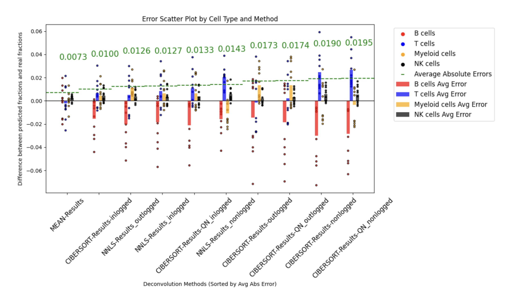
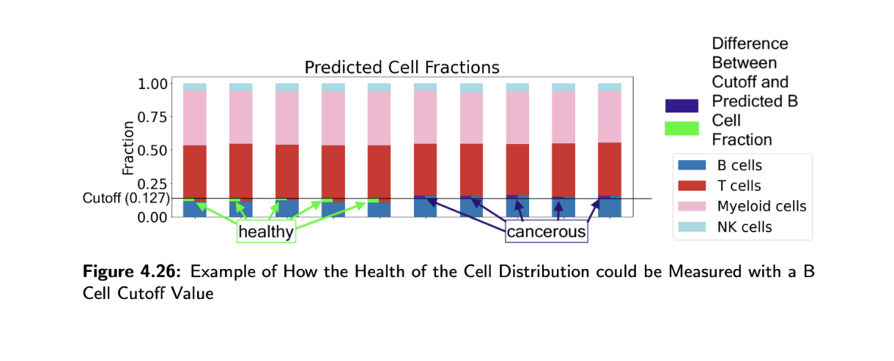
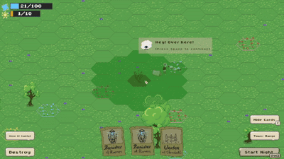

Samuel Gair
ETH Computer Science MSc | Machine Intelligence & Data Systems
"The purpose of computing is insight, not numbers." – Richard Hamming
Education
ETH Zürich
MSc Computer Science (Major: Machine Intelligence, Minor: Data Management Systems)
Sep 2025 – Jul 2027
ETH Zürich
BSc Computer Science (GPA: 5.1/6.0)
Sep 2022 – Jul 2025
Relevant Coursework: Advanced Machine Learning, Large Language Models, Reliable and Trustworthy AI, Probabilistic AI, Big Data, Data Modelling and Databases, Parallel Programming, Systems Programming.
Research & Engineering Projects
High-Dimensional Signal Deconvolution Research (Thesis) [View Code]
- Pioneered a Python/R machine learning framework for proteomic deconvolution, benchmarking adapted state-of-the-art models against custom algorithms to predict cell-type composition.
- Achieved a 57.3% reduction in Mean Absolute Error by engineering a novel randomized algorithm modification, enabling models to effectively process highly variable, 10'000-dimensional data.
- Architected a reproducible, end-to-end ML pipeline to support downstream personalized oncology research, resulting in a co-authored poster presentation at ECCB 2026.


Large Language Models & AI Safety [View Code]
- Engineered end-to-end Retrieval-Augmented Generation (RAG) pipelines in PyTorch and Hugging Face, building context-retrieval mechanisms to mitigate LLM hallucinations.
- Executed PyTorch-based model-inversion attacks to reconstruct prompts from CLIP text embeddings, achieving >0.99 cosine similarity to bypass vision-language safety filters.
- Developed stochastic local search algorithms against REST APIs to optimize adversarial token suffixes, successfully evading statistical LLM watermarks (p-value detection).
Advanced Machine Learning for Healthcare & Time-Series [View Code]
- Sparse Time-Series Architecture: Engineered imputation-free Transformers in PyTorch to process highly irregular (t, z, v) measurement triplets, automating feature extraction pipelines with tsfresh.
- Tabular Diagnostics & XAI: Built cardiac risk prediction models and evaluated non-linear feature attributions using SHAP and partial dependence curves.
- Computer Vision & Reliability: Developed a CNN to detect pneumonia from X-rays, utilizing Grad-CAM to map diagnostic pixel regions and label-shuffling to verify model integrity.
Game Development with Object-Oriented Architecture [View Code]
- Architected a highly scalable, object-oriented simulation environment in C#, managing real-time entity states and pathfinding algorithms in game loops.
- Designed and implemented custom graph algorithms for dynamic pathfinding and spatial optimization, ensuring high-performance execution and efficient memory management.

Low-Level Systems & Concurrency
- x86 Virtual Memory Simulator (C): Engineered a paging simulator mapping multi-level page table translations (PML4, PDP, PT) and managing CR3 hardware register interactions. [Code]
- Concurrent Resource Management (Java): Built a thread-safe traffic simulation system utilizing ReentrantLock, semaphores, and monitors to prevent deadlocks under high concurrency. [Code]
Machine Learning for Genomics [View Code]
Top 10% Class Award
- Built PyTorch deep generative models (scVI/scANVI) and NNLS regression pipelines to annotate ~50k single-cell profiles and deconvolve bulk RNA-seq samples.
- Developed an end-to-end Scanpy and Harmony batch-correction pipeline, optimizing graph clustering via grid search.
Skills & Technologies
Machine Learning & AI: Python, PyTorch, Transformers, Scikit-learn, XGBoost, NumPy, Pandas, SciPy, tsfresh, R, Apache Spark, Hadoop
Systems & Engineering: C/C++, Java, SQL, Unix/Linux, NoSQL
Experience & Details
ETH Computer Science Library Assistant
December 2024 – Present
- Managed computer science literature, provided technical book recommendations, and directed library social media.
Languages: English (native) | German (native) | French (B2) | Polish (B2)
Interests: Volleyball (Stäfa team captain 2021) | Bassist in a jazz band